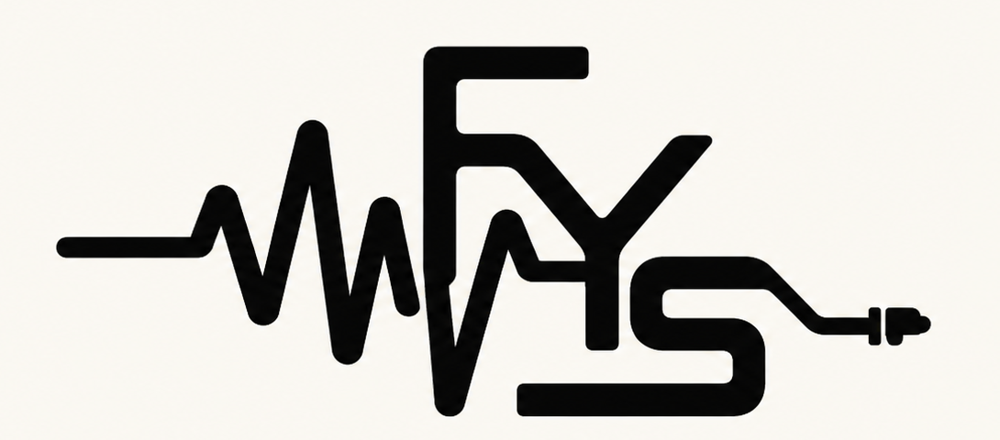

Purchase support
Include the email used at checkout and the product purchased.
Purchase Help
Fix Your SoundAudio tools for real mixesInstall and purchase help
For plugin install issues, checkout questions, Logic Pro support, license scope, or bug reports, contact support with your product, macOS version, DAW, and order email.
Include the email used at checkout and the product purchased.
Purchase HelpInclude macOS version, DAW name/version, and what the plugin scanner shows.
Install HelpCheck the current Mac, Logic Pro, AU, and pending DAW support notes.
CompatibilitySee the current Lite and Full availability notes for each plugin.
DownloadsLite to full
Beta FAQ
No. Keep Lite installed until Full opens and recalls correctly in your DAW, then decide what you want to keep.
Full versions will open when the paid release is ready.
On Mac, check Audio Units in Logic Pro. Ableton Live support is pending a separate QA pass.
Send the product name, Lite or Full, macOS version, Mac chip, DAW/version, installer name, and a screenshot of the scan or error.
Fix Your Sound is Mac-first today. Windows support should not be assumed unless a specific Windows build is announced.